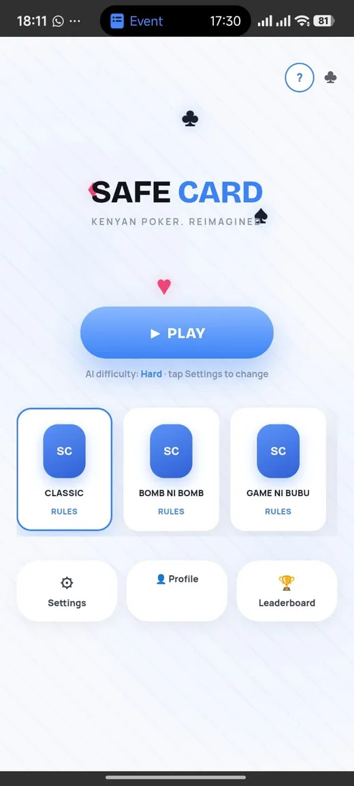
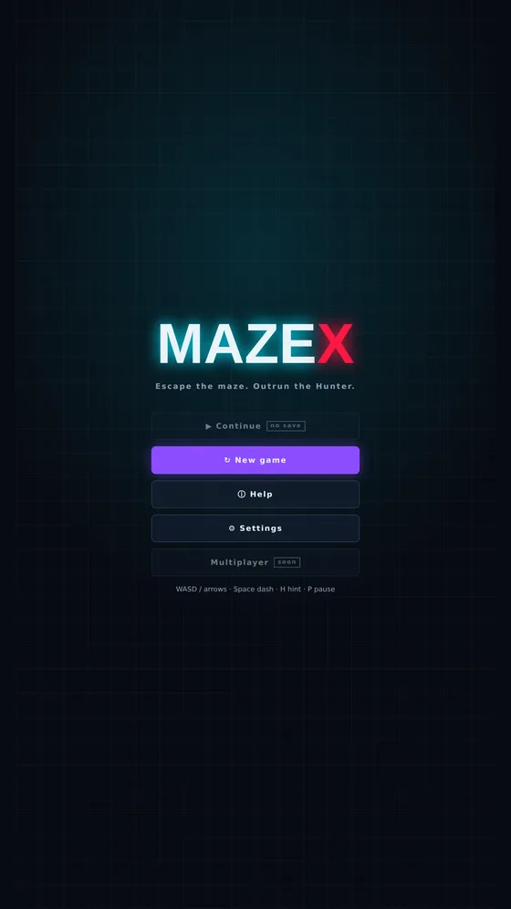
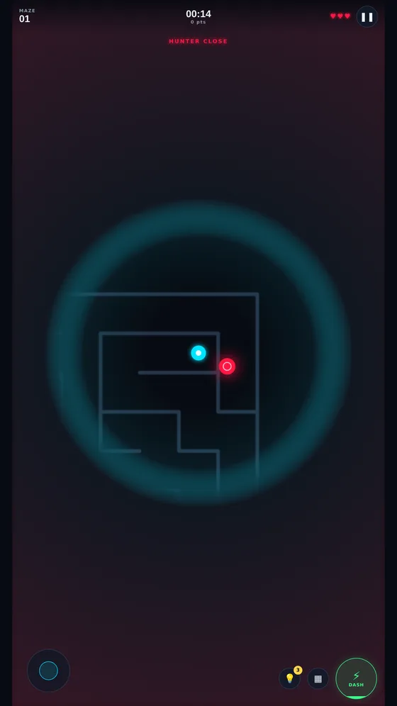

Nexeric Games started with a simple goal: make games, release them, learn from players, and keep building. Rather than treating each game as a one-off project, I wanted a single, growing studio presence.
Two games are the beginning, not the limit — the studio is built to grow as I make more.
I built the site as a static, config-driven system rather than hand-coding a new page for every game. Each game is described once, in a single structured entry, and the site generates its game page, home page card, footer listing, About page mention, and even the account-deletion form from that one entry.
That meant adding MazeX to the site after Safe Card didn't require rebuilding anything by hand.
Safe Card — a fast, unpredictable card game inspired by familiar poker mechanics, with four modes and AI opponents.
MazeX — a 2D maze survival game where the goal is to find the exit before the Hunter catches you, with procedurally generated mazes, hints, and a minimap.
Visit the studio site to play both games in the browser or download the APKs.